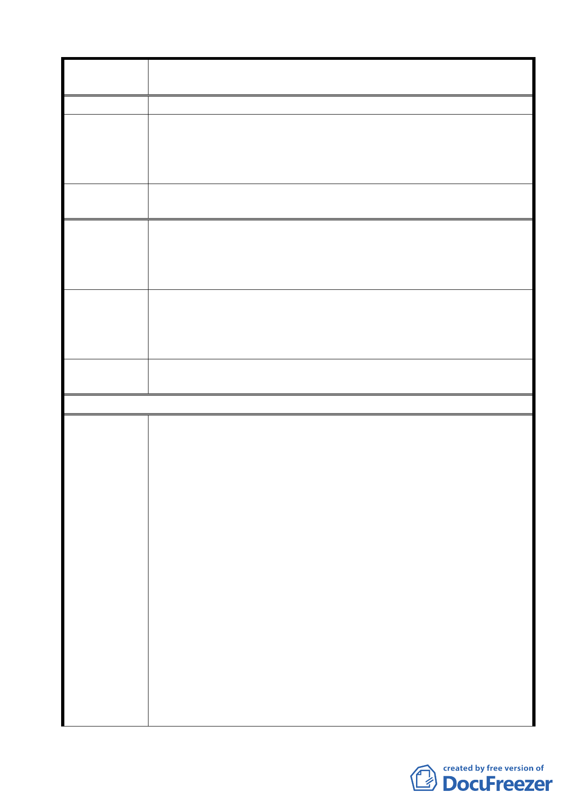

案名
變更臺北市士林區陽明山山仔后地區第二種住宅區為特定住宅區
細部計畫案
陽明山。
美軍社區用來配合教育局的政策，將是最理想的再利用方式，村
建議辦法
內將設有市場、學校等，類似當初的美軍社區的規劃，也符合許
局長講的公共性的提昇與增進社會利益。希望都發局、教育局與
文化局一起討論這個規劃案的可行性。
委員會議
決議
同編號 2 決議內容。
美軍社區的範圍幾近山仔后地區的一半，是進入陽明山國家公園
陳情理由七
必經之地，又兼具生態與歷史保存的價值，破壞了就再也無法複
製，任何計畫書都應謹慎擬定，宏觀考量，以對現在及將來的人
民負責。
建議辦法
這麼重要的案子，影響範圍這麼大，為了對過去的歷史負責任，
也為考量周全，不能僅依文字內容作決議。非常期待委員們在開
會之前，親自上山實地探查，與山上的人會面， 在戶外聽聽大家
的心聲與世代居住山仔后居民的意見。
委員會議
決議
同編號 2 決議內容。
97/9/25 陳情意見
台北市文化局於今年 6 月完成「陽明山美軍宿舍群文化景觀
保存維護計劃」。都市發展局也跟著作出「變更台北市士林區陽明
山山仔后地區第 2 種住宅區為特定住宅區細部計畫案續審補充資
料」。
乍看之下，這兩個計畫十分周到，但仔細閱讀，絕大部分的
美軍宿舍未列入細部計劃的保護傘下，兩個計劃皆未著眼於「現
狀保存管制」，而是立足於未來開發此區「現狀不保時將如何管制
使用」。
陳情理由
1.文化局的保存維護計劃中，在「日常維護管理」一項，只明訂
空間與建築保護的規範，也就是說「 如何」維護管理，但隻字
未提及由「誰」來維護管理。 依文資法第 55 條規定（縣市主
管機關…，擬定文化景觀存維護計劃 …，並輔導文化景觀所有
人、使用人或管理人配合辦理），文化局應依法在保存維護計劃
中，責成台銀成立「山仔后文化景觀重整委員會」或「台灣銀
行文化資產管理委員會」等組織 ，甚至成立文化資產信託基
金，以落實保護計劃。
2.文資法第 56 條很清楚指示，文化局可以會同都發局共擬文化
景觀保存計劃，並依都市計劃法「編訂」「劃定」或「變更」此
25